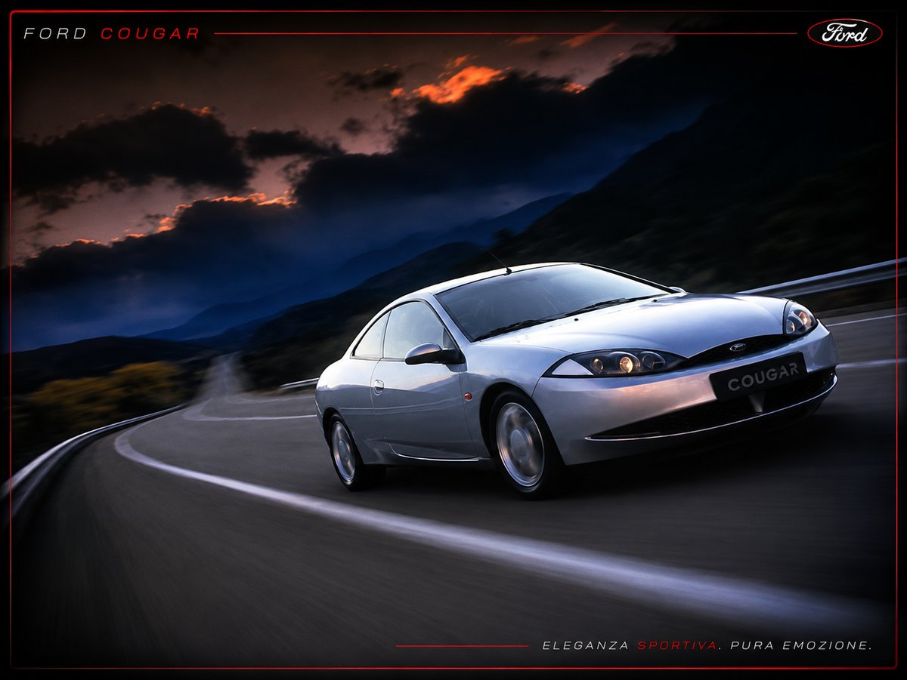

GUIDA ALL'ACQUISTO
State pensando di acquistare una Ford Cougar? In questa pagina abbiamo raccolto, in forma di domande e risposte, tutto quello che il club ha imparato in anni di esperienza diretta: prezzi reali, chilometraggi, punti di forza, difetti noti e limitazioni alla circolazione.

QUANTO COSTA UNA COUGAR OGGI?
In Italia le quotazioni partono da circa 3.500 euro e arrivano intorno ai 7.000: già nella fascia bassa si trovano vetture in eccellenti condizioni.
Un prezzo più alto è giustificato — escludendo le vetture importate — solo da tre elementi: un chilometraggio particolarmente basso e dimostrabile, una conservazione davvero eccellente oppure un impianto GPL recente e di qualità. Sono situazioni estremamente rare in Italia e vanno sempre provate nero su bianco, con certificati dei tagliandi e documentazione completa: a oggi non ci è mai capitato un annuncio che le riunisse tutte e tre.
Diffidate delle vetture proposte sopra i 4.000 euro che non presentano nessuna di queste caratteristiche.
QUANTO COSTA IL PASSAGGIO DI PROPRIETÀ?
Per i 125 kW della Cougar V6 il costo complessivo si aggira oggi, indicativamente, tra i 550 e gli 800 euro. La voce principale è l'IPT, proporzionale alla potenza e diversa da provincia a provincia; si aggiungono un centinaio di euro tra bolli, emolumenti ACI e diritti di Motorizzazione, più l'eventuale onorario dell'agenzia di pratiche auto. Gestendo la pratica di persona presso PRA o Motorizzazione si risparmia l'onorario, mettendo in conto un po' di tempo e di code agli sportelli.
QUANTI CHILOMETRI SONO TROPPI?
Ovviamente, meno chilometri ha e meglio è. Per la Cougar, però, la soglia di attenzione è più alta del solito: il mastodontico 2.5 V6 Duratec in versione stock è costruito per durare davvero tanti chilometri. Si trovano ottime Cougar che intorno ai 200.000 km hanno ancora molto da dare — e in quella fascia il prezzo è generalmente molto abbordabile.
Una risorsa del club
Il club ha contatti con fornitori e gruppi internazionali in Germania, Inghilterra e Stati Uniti, in grado di fornire motori ricostruiti pari al nuovo (km 0, da rodare) — anche nella rara versione ST200 da 205 CV, questi ultimi a poco più di 2.000 euro.
CINGHIA DI DISTRIBUZIONE? NO: DOPPIA CATENA
Il problema non si pone
La costosa sostituzione periodica della cinghia di distribuzione, sulle Cougar, semplicemente non esiste: il Duratec monta una doppia catena, praticamente eterna.
Al meccanico di fiducia basta controllarla di tanto in tanto. Un eventuale problema alle catene è quasi sempre anticipato da un caratteristico cigolio metallico, da non confondere con i rumori che possono provenire dalla cinghia dei servizi o da un cuscinetto. Nel club, a oggi, non ci risulta un solo caso di sostituzione o riparazione della catena di distribuzione.
PERCHÉ È COSÌ RARA E COSTA COSÌ POCO?
La Cougar è stata prodotta tra il 1998 e il 2002: gli esemplari hanno ormai tra i 24 e i 28 anni (vedi Esenzione Bollo) e quelli rimasti in Italia sono davvero pochi. È a tutti gli effetti un'auto rara.
In Germania, in Inghilterra e in altri paesi europei è stata molto apprezzata ed è ricercata ancora oggi. In Italia, invece, le scarse vendite le hanno cucito addosso l'etichetta di "flop commerciale": il pubblico le preferì, incredibilmente, la sorella Mondeo — equipaggiata con lo stesso identico motore.
"EH, HA POCHI CAVALLI RISPETTO ALLA CILINDRATA"...
...è la frase che vi sentirete dire più spesso. "Eh, ma ha comunque 170 cavalli" è la tipica risposta. Chi ha ragione? Entrambi... ma, per citare un film, "a volte la verità sta nel mezzo".
La premessa doverosa: la Cougar non è, e non vuole essere, un'auto sportiva. È un'auto "da crociera", ideata per percorrere lunghe distanze in autostrada.
Le auto europee, per esigenze diverse, montano in genere propulsori piccoli, di cilindrata sempre più bassa (e quindi più ecologici) ma sempre più sovralimentati. Il vantaggio è nelle prestazioni; il prezzo si paga in affidabilità e durata del motore, con soglie di chilometraggio relativamente basse, riparazioni per usura "prematura" e la sostituzione dell'auto dopo pochi anni.
Gli americani hanno esigenze opposte: strade in gran parte rettilinee, grandi distanze percorse quotidianamente, benzina più economica. La priorità è un motore affidabile — che non lasci mai "a piedi" nel bel mezzo del nulla — e che duri il più possibile. La ricetta: motori grossi (possibilmente a V, da sei cilindri in su), grande cilindrata e bassa potenza specifica, da far girare a basso regime in quinta sui lunghi tragitti. Il risultato è un motore per nulla stressato, che privilegia durata, affidabilità e chilometraggio totale contenendo persino i consumi.
Per queste ragioni è importante capire l'auto in questione prima di pensare a un suo eventuale acquisto.
Negli Stati Uniti — dove la Cougar ha avuto il suo vero successo, tanto da spingere Ford/Mercury a produrre diversi modelli "speciali" fino alla fine del 2002 — esistono kit dedicati (anche turbo, come quelli di Nautilus Performance) che garantiscono incrementi di potenza anche tripli, a una spesa decisamente inferiore rispetto a un'elaborazione equivalente su una vettura di concezione europea. Nella sezione Elaborare spieghiamo come guadagnare fino a +30 CV con modifiche davvero minime.
...E I CONSUMI?
Meno drammatici di quanto si pensi: Ford ha dotato questa vettura di un sistema che mantiene i consumi contenuti quando si adotta una guida tranquilla. Sotto la soglia dei 3.900 giri restano decisamente ragionevoli; solo superandola si aprono i condotti di aspirazione secondari (sistema IMRC), che liberano tutti i 170 cavalli — facendo salire prestazioni e consumi.
Chi vuole risparmiare davvero farebbe bene a cercarne una già equipaggiata con impianto GPL. Curiosità interessante: aumentando le prestazioni dell'auto, i consumi rimangono pressoché identici.
LE PRESTAZIONI REALI
170 CV, 225 km/h di velocità massima, 0-100 km/h coperto in 8,6 secondi dichiarati (7,6 quelli rilevati nelle prove) e 220 Nm di coppia. L'accelerazione non è da capogiro, ma è più che sufficiente: è in ripresa che quest'auto dà il meglio di sé. Il cambio è un po' gommoso negli innesti, però ben rapportato, preciso e discretamente sportivo.
Chi vuole di più può montare, con una spesa accettabile, componenti originali SVT (ST200) reperibili sul mercato estero: le prestazioni salgono sensibilmente, i consumi restano pressoché inalterati.
I DIFETTI PIÙ COMUNI
"Piene di difetti"? No. Qualche difetto, sì. In Italia sono arrivate solo le Cougar di prima serie, quelle con più problemi: in America gli stessi difetti furono corretti gratuitamente con richiami ufficiali. I punti deboli noti sono:
- fari che si appannano
- cigolii vari ai finestrini
- pompa dell'acqua con rotore in plastica
- cigolii e rumori a freni e valvola dell'aria
- interruttore degli stop
- pompa della benzina e galleggiante
- alternatore sottodimensionato
Nella nostra esperienza diretta i fastidi reali si sono limitati a pompa dell'acqua — sostituita comunque a quasi vent'anni dalla fabbricazione — e alternatore. Su un'auto che ha ormai superato il quarto di secolo qualche lavoretto di sistemazione è fisiologico... ma, secondo noi, il gioco vale ampiamente la candela.
I RICAMBI SI TROVANO ANCORA?
In Italia i ricambi disponibili sono pochissimi e, proprio per questo, venduti a prezzi elevatissimi: è l'altra faccia del flop commerciale. La buona notizia è che oggi l'ostacolo è facilmente superabile con la semplice importazione dall'estero — e il club può indicarvi i canali giusti (vedi anche il box sui motori ricostruiti, più in alto).
...E I PREGI?
Le Cougar rientrano nel segmento delle "berline diventate coupé": offrono spazio e comfort e, allo stesso tempo, restituiscono un'immagine personale e accattivante di chi le guida.
È un'auto davvero spaziosa: l'interno viene spesso definito, ironicamente, "un salotto" — nel tipico stile americano. I posti posteriori sono validi (salvo per le persone davvero molto alte) e il bagagliaio è a prova di famiglia: da 410 litri si espande fino a 930.
Il comfort generale ricorda quello delle più signorili Jaguar, per sospensioni e andatura: viene spesso definita "auto da autostrada", ma si comporta egregiamente anche in città.
Infine, superati i vent'anni, è possibile iscriverla senza difficoltà ai registri delle auto di interesse storico (ASI), con vantaggi concreti: esenzione totale del bollo — o riduzione al 50%, in base alla Regione — e sconti persino sull'assicurazione. Ne parliamo nella pagina Esenzione Bollo.
LIMITAZIONI ALLA CIRCOLAZIONE (EURO 2)
La Cougar è omologata Euro 2 benzina, e questo è oggi il punto da valutare con più attenzione.
Da verificare prima dell'acquisto
Le normative ambientali cambiano frequentemente e variano da Comune a Comune. Attualmente la Cougar è soggetta a limitazioni permanenti in numerose città italiane. In molte aree la circolazione resta comunque consentita nelle ore serali e notturne, nei fine settimana, nei giorni festivi e durante le deroghe previste dalle amministrazioni locali; in alcune città i residenti dispongono inoltre di giornate di accesso libere, prenotabili.
Prima di acquistare una Cougar è quindi fondamentale verificare sempre il regolamento aggiornato del proprio Comune e della propria Regione.
Le strade per conviverci sono essenzialmente tre. La prima: usarla come auto del tempo libero — seconda auto per weekend, festivi e uscite occasionali — cosa che, tra l'altro, ne allunga ulteriormente la vita. La seconda: aderire, dove disponibili, ai servizi regionali a tetto chilometrico come Move-In, che concedono un monte chilometri annuo anche ai veicoli soggetti a limitazioni. La terza: installare un impianto GPL.
Il GPL merita due righe in più: prolunga la durata e la vita del motore, fa risparmiare considerevolmente sui consumi (un pieno costa circa la metà) e rende l'auto bi-fuel — categoria che in diverse regioni gode di regole più favorevoli nelle zone a traffico limitato (anche qui: da verificare localmente). Un buon impianto installato da professionisti del settore costa intorno ai 2.000 euro: un ottimo compromesso rispetto all'idea di cambiare auto. E non si rinuncia alla Cougar! Tutti i dettagli nella pagina GPL.
VALE ANCORA LA PENA COMPRARLA NEL 2026?
La Ford Cougar non è un'auto per tutti. Richiede qualche attenzione in più rispetto a una comune utilitaria, ma ripaga con una linea ancora attuale, un ottimo comfort di marcia e un V6 dal sound inconfondibile.
Acquistata con criterio e mantenuta correttamente, rimane ancora oggi una delle coupé più interessanti e sottovalutate della sua epoca.
Prima di acquistarne una
Hai trovato una Cougar che ti interessa? Chiedi un parere alla community del Ford Cougar Club Italia: in molti casi bastano alcune fotografie per individuare difetti, lavori già eseguiti o interventi imminenti.
Un confronto prima dell'acquisto può evitare spese impreviste e aiutarti a scegliere l'esemplare migliore.